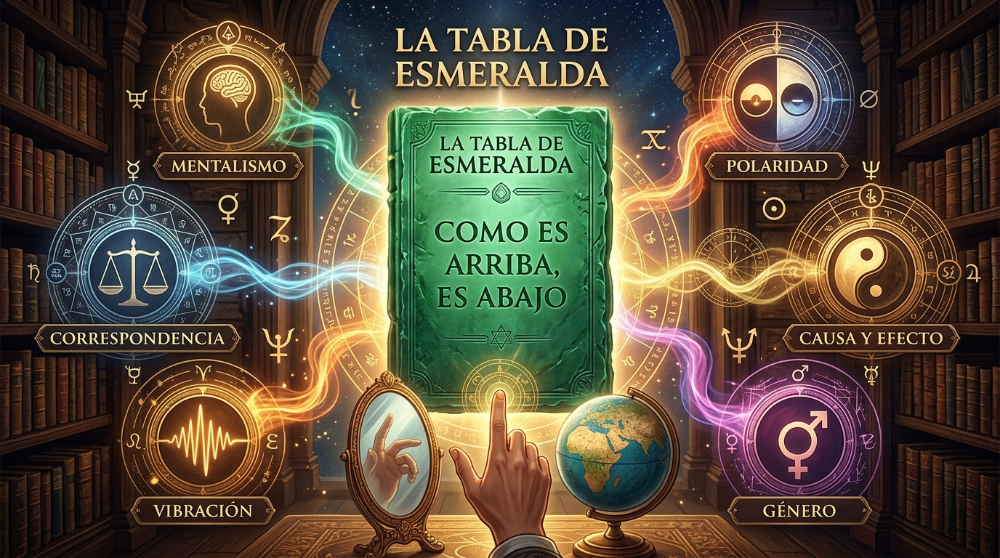
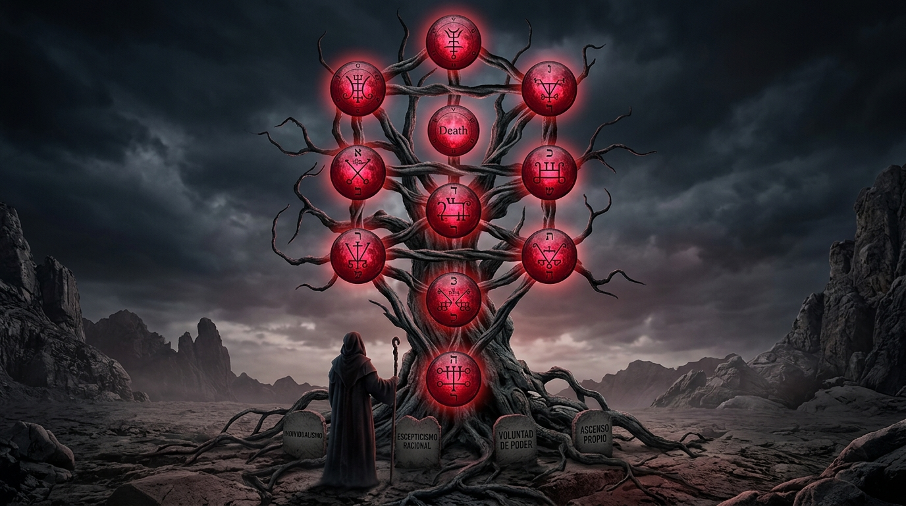

.png)
Los Tres Pilares de la Obra
.jpg)
1. La Cábala Hermética
El Mapa de la Mente: Utiliza el Árbol de la Vida y sus 10 Sefirot como una guía de estructuración cognitiva, equilibrio emocional y gestión estratégica de proyectos.

2. Filosofía Hermética
Las Leyes del Universo: Aprende los 7 principios de transformación mental (Mentalismo, Vibración, Polaridad...) para dejar de ser un efecto y convertirte en Causa de tu realidad.

3. Satanismo Filosófico
La Soberanía Individual: Un análisis ateo y racionalista del Camino de la Izquierda (LHP). Enfocado en la integración de la Sombra, el autodominio y el establecimiento de límites firmes.
Índice de Contenidos
-
Módulo 1: La Cábala - El Mapa Cósmico
Orígenes Históricos, análisis del Árbol de la Vida frente al dualismo clásico y la aplicación práctica de las 10 Sefirot como plantilla de mapeo psicológico.
-
Módulo 2: Ocultismo y Hermetismo
De Alejandría al Renacimiento. Comparativa con la Ciencia Moderna y guía práctica de aplicación de los 7 Principios Herméticos en el día a día.
-
Módulo 3: Satanismo y el Camino de la Izquierda
Evolución teológica e histórica. Comparación técnica entre LHP y RHP, e integración de la sombra (Jung) para el poder personal.
-
Módulo 4: Síntesis, Simbología y Ritualística
Iconografía detallada (Pentagrama, Baphomet) y descomposición de la psicología del ritual como herramienta de reprogramación subconsciente.
Preguntas Frecuentes
¿Necesito conocimientos previos para leer este libro
No. La obra esta escrita con un enfoque pedagógico que abarca desde la historia y contexto de los conceptos hasta su aplicación práctica paso a paso
¿El texto premueve alguna fe o práctica religiosa?
No. Es un tratado filosófico, histórico y comparativo. No requiere adscripción ni devoción a ningún culto o religión.
¿En que formato recibire mi compra?
Recibirás acceso inmediato a un archivo PDF diseñado para una excelente lectura en celulares, tablets y e-readers
Conviértete en el Arquitecto de tu Propia Realidad
Integra el conocimiento analítico de la sombra y la luz y construye una filosofía de vida soberana
Obtener el Ebook Ahora